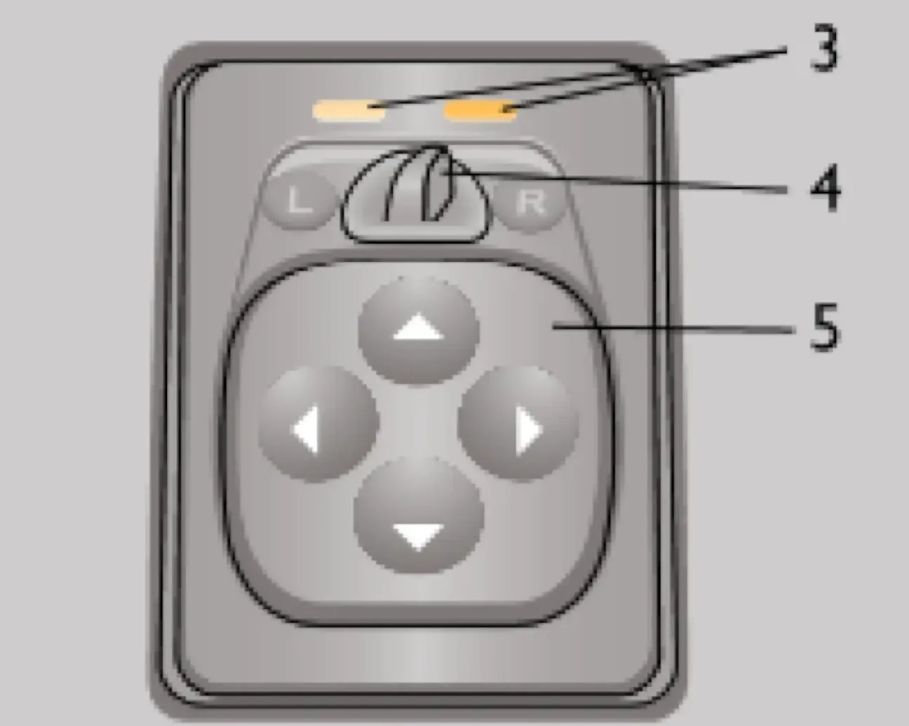
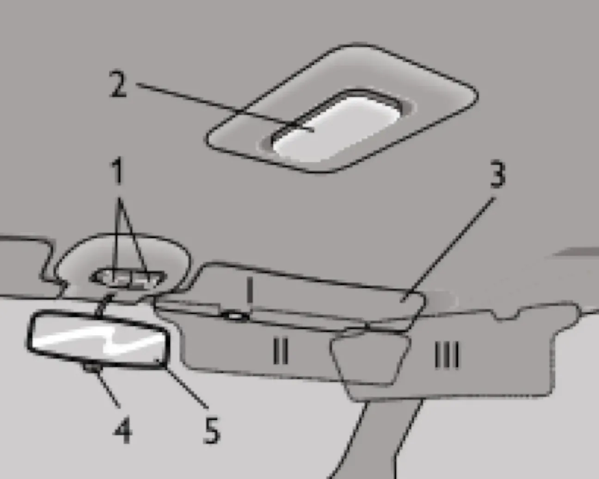
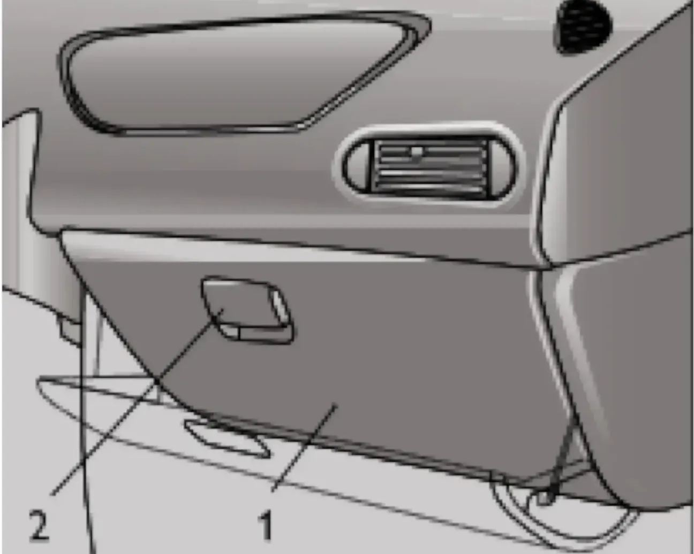

Оборудование салона
Наружные зеркала имеют ручную регулировку из салона. В вариантном исполнении автомобили комплектуются наружными зеркалами с электроприводом. Блок управления зеркалами располагается на облицовке туннеля пола.

Выбор оптимального положения зеркал производится последовательным нажатием клавиши в направлениях, указанных стрелками, а выбор регулируемого зеркала — вращением клавиши на 90° вокруг своей оси. Регулируемое зеркало определяется направлением метки. При включенном зажигании электропривод одного из зеркал постоянно находится под напряжением.

В вариантном исполнении на автомобиле устанавливается блок управления наружными зеркалами, в котором выбор регулируемого зеркала производится перемещением движка, а регулировка — нажатием на край клавиши в местах, обозначенных стрелками. В крайних положениях движка ставится под напряжение электропривод левого (буква «L») или правого (буква «R») зеркала и загорается соответствующий сигнализатор.
Внутреннее зеркало регулируется поворотом вокруг шарнирной головки. Для предотвращения ослепления светом фар движущегося сзади транспорта рычажком можно изменить угол наклона зеркала.
Противосолнечные козырьки в зависимости от направления лучей солнца можно установить в одно из трёх положений.
Лампа плафона внутреннего освещения при закрытых дверях включается и выключается нажатием на переднюю и заднюю кромки рассеивателя плафона. Плафоны индивидуального освещения обеспечивают направленную подсветку отдельных предметов. Включение и выключение плафонов осуществляется нажатием на кромки клавиш.
Чтобы открыть крышку вещевого ящика, потяните на себя ручку и откиньте крышку вниз. При открытой крышке внутренняя часть вещевого ящика освещается лампой, если включено зажигание.
